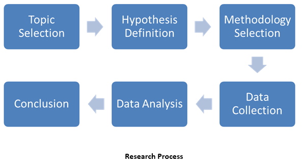
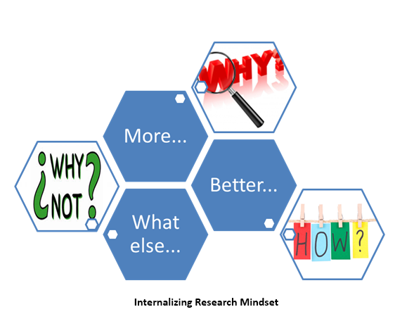
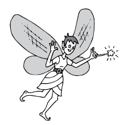

Internalising a research mindset

Dr. Meghashri Dalvi has combined her love of writing with engineering and management experience to create a successful career in technical communication. She currently works as consulting technical communicator, researcher, and visiting faculty. You can reach her at meghashri@gmail.com.
Dr. Meghashri Dalvi
What is common to evaluating tools, exploring formats, and analysing value contribution? 
It was a crisp and pleasant morning. An experienced candidate sat in front of us. He had impressive credentials and a confident way with the interviewing panel. In the course of the discussion, he mentioned that technical communication is a multidisciplinary field. Concurring with him, I requested him to talk about the various skills that a technical communicator must have. He rattled off a number of skills. When I suggested "research mindset", he blinked.
Did you blink too?
It all depends on what research means to individuals. The simplest definition would be systematic investigation by gathering information from various sources and presenting that information in a structured manner.
At the next level, research assumes a little deeper meaning — systematic investigation to revise or increase present knowledge. This aspect can be interpreted as 'adding value' — again, a regular activity for technical communicators. For my puzzled candidate as well.
The real test of a research mindset lies much outside the standard activity, and becomes apparent only in special cases. Let's take a look at some cases.
Case 1
A new tool is trending and you want to recommend it to your company.
Case 2
A colleague suggests that your team use a specific format of training guide that was successfully adopted by a reputed company.
Case 3
You are writing a white paper for the first time and you want to know how to proceed.
Typically, in such scenarios, technical communicators take the help of peer groups and online forums. Let's see how these cases can be researched systematically.
The first step of any research activity is to define the objective clearly. In the specific cases cited earlier, the objectives will be:
Objective 1
Deduce if ToolX is the right tool for your company.
Objective 2
Determine if the suggested format is suitable for your training guide.
Objective 3
Learn to write a white paper.
Once the objective is established, it needs to be broken down into measurable attributes. For example, some of the important attributes of a new tool will be price, learning curve, and compatibility with the existing system.
For measuring the attributes, the methodology and resources should be carefully decided. The methodology varies from case to case.
Methodolgy 1
Use the trial period to evaluate the tool; consult online reviews and forums.
Methodolgy 2
Conduct a few trials; use metrics like comparisons on usability, workload estimation for writing and updating, and efforts for migrating to the new format.
Methodolgy 3
Check out good samples; gather templates and best practices.
In certain circumstances, determining the methodology itself can be quite a task, especially if the team has no previous experience to fall back on. With technology growing by leaps and bounds, such situations are becoming more common and, in such cases, online forums serve as a good resource.
With clear measurables in hand, the next phase is collecting and analysing data. This is the most critical part of the research process. Any mistake at this stage can result in wrong conclusion, forcing you to do the thing all over again. Starting with an assumption (hypothesis, in research parlance) is a good idea. However, you must ensure that your hypothesis does not influence data collection and analysis.
Some of the conclusions can throw you off the track. This is normal. If required, objectives or measurable attributes can be revisited and refined. For example, if you conclude that ToolX may be a great tool but not immediately relevant to your projects, the tool can still be recommended to the management for future reference. Or, while evaluating ToolX, you might come across some interesting information about online help trends. It may then make sense to refine the objective to — Analyse the online help trends to make online help future-ready for your company projects.
Any research conclusion should withstand the subsequent tests. The practical suggestions based on the conclusions should be implemented with necessary tweaking and fine-tuning.

So did my candidate do any of these things? He did occasionally, at this intermediate research level, but definitely not that systematically.
Now, note that these cases are still limited to immediate relevance to a technical communicator. How about moving beyond that? How about working on topics that will be useful to a larger group of stakeholders? For example, what percentage of users really read the PDF manual? How can online help be tested for usability? How much cost-saving results from active content reuse across the organisation? To what extent does good documentation save support costs? Should screenshots be included in online help?

The scope of such topics include analysing statistical data of large samples to deduce quantitative results; these results can also be supplemented with insights from a qualitative research.
These advanced topics need a longer time frame and also need participation across teams. Some activities, such as user testing, may also need help from external agencies. Finally, you must have the support of senior management; gain this support by stating a significant value proposition. Big projects definitely demand a methodical approach. The hypothesis itself may require time and effort for correct definition. Brainstorming with the team will help you decide on the research methodology. At times, you might need a couple of parallel studies to arrive at a final conclusion. Brainstorming in cross-functional teams will expose you to new concepts and innovative techniques — a bonus benefit.
Data collection for big projects will be spread across a longer time frame, often more than 10 months. Measurables could also be many more and a number of statistical tests might be required to handle the analysis. Ensure that your task list factors this into the project timeline, and update your management regularly about the progress.
22% lower support cost, 47% users refer to documentation as a first step to solve a problem, 11% cost-saving by content reuse — results of such research projects are distinct and compelling, mostly due to clear statistics. Ensure that you publish these results internally to have a broader impact across the organisation. If possible, share the conclusions and suggestions with the professional community. It is another opportunity to improve on them.
Expanding the scope further, how about looking at Technical Communication on a larger scale? Quite a few research studies can be found online that focus on tools, processes, and best practices. Several professional bodies like STC, ISTC, and tekom propose and carry out such studies and make them available to the community. Some dedicated community websites, websites of professional companies, and research journals may also provide useful research and analysis. Some of these studies can be used for formulating strategy, while some can be used for improving efficiency.
STC also undertakes similar activities and some of the path-breaking research in technical communication are funded by STC. Judy Ramey and Janice Redish worked on a yearlong project for Measuring the Value Added By Professional Technical Communicators (1993-994), to highlight value, and not just compliance, for technical communication activities.
One of the finer aspects of research is examining where a specific field is headed. This activity requires skilled observation and a keen insight into the current events, along with foresight to spot the trends. Expert observers who have honed their research skills are often able to share their insights and project forecasts.
After covering basic, intermediate, and advanced research, you will notice that the entire research process pivots on three essential actions — ask, explore, and analyse. This, in short, is the research mindset.
Ask
Be curious, ask questions, respect intuition, challenge conventions, challenge yourself
Explore
Keep learning, try experimenting, continue innovating, recognise opportunity, be creative, be persistent.
Analyse
Start organising, stay logical, practice thinking and linking, evaluate outcomes, apply validation.
Developing a research mindset simply means always asking, taking time to explore, and constantly analysing for improvement. Besides adding tremendous value to work, a research mindset gives ample opportunity to learn and innovate, which is an immensely enriching experience.

You must be dying to know if the candidate was selected. Yes, we did pick him for he was very much open to learn and that, essentially, is the key towards internalising the research mindset.
Acknowledgements
The cartoons are from http://www.makebeliefscomix.com/.